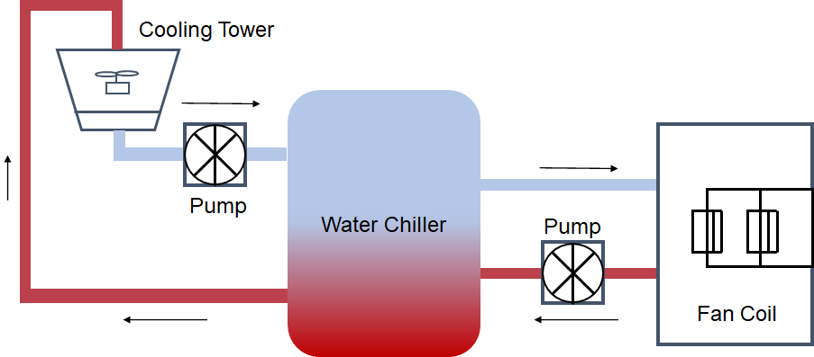

HVAC System
Example 1: A basic test for components

This test has 5 kinds of components:
- Water Chiller
- FanCoil
- Pump
- Cooling Tower
- Simple Pipe
using Ai4EComponentLib
using Ai4EComponentLib.HVAC
using DifferentialEquations, ModelingToolkit
# Define components
D_ch = [22.08252111,-0.008374357,0.605004615,-0.544042021,-2.10E-07,7.04E-05,0.000299955,-0.028824777]
@named ch1 = WaterChiller_SimplifiedPolynomial(D=D_ch)
D_pump = [120,-1500,-0.5,0.8,0.8,0.8]
@named pump1 = Pump(D=D_pump)
@named pump2 = Pump(D=D_pump)
@named coolingTower1 = CoolingTower(Tw=26, ΔTct=5)
D_fan = [1, 1.2, 1.2]
@named fancoil1 = FanCoil(D=D_fan, Qf0=2500)
@named pipe1 = SimplePipe(R=100)
@named pipe2 = SimplePipe(R=100)
@named pipe3 = SimplePipe(R=100)
@named pipe4 = SimplePipe(R=100)
# Connect components
eqs = [
connect(ch1.coolerIn, pipe1.outlet),
connect(ch1.coolerOut, pipe2.inlet),
connect(ch1.chilledIn, pipe3.outlet),
connect(ch1.chilledOut, pipe4.inlet),
connect(pipe2.outlet, coolingTower1.inlet),
connect(coolingTower1.outlet, pump1.inlet),
connect(pipe1.inlet, pump1.outlet),
connect(fancoil1.inlet, pipe4.outlet),
connect(fancoil1.outlet, pump2.inlet),
connect(pump2.outlet, pipe3.inlet),
pump2.inlet.p ~ 0,
pump1.inlet.p ~ 0,
pump1.n ~ 2000,
pump2.n ~ 2000,
ch1.Tei ~ 7
]
@named connects = ODESystem(eqs, t)
@named model = compose(connects, ch1, pipe1, pipe2, pipe3, pipe4, pump1, pump2, fancoil1, coolingTower1)
sys = structural_simplify(model)
prob = ODEProblem(sys, [], (0.0, 0.0))
sol = solve(prob)retcode: Success
Interpolation: specialized 3rd order "free" stiffness-aware interpolation
t: 1-element Vector{Float64}:
0.0
u: 1-element Vector{Vector{Float64}}:
[618.6600663858139, 46.36455431014977, 0.04855922989447327, 19.31663116778515, 48.55922989447327]sol[ch1.P]1-element Vector{Float64}:
618.6600663858139sol[ch1.Tei]1-element Vector{Float64}:
7.0sol[ch1.Teo]1-element Vector{Float64}:
19.31663116778515sol[ch1.Tci]1-element Vector{Float64}:
31.0sol[ch1.Tco]1-element Vector{Float64}:
46.36455431014977